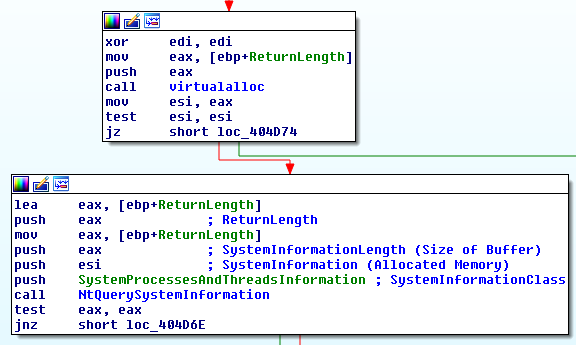

- on Tue 23 December 2014
Recently, I had the chance to check out one of MalwareTech's latest blog posts on the Phase Bot. What caught my eye in particular was his mention of a track data scanner module towards the end of the post.
As point of sale related malware becomes increasingly popular, the addition of such modules in widespread malware families has become more commonplace. Everyone is attempting to hop on the bandwagon it would seem. That being said, I was still quite curious to see what the referenced DLL looked like. So, I went ahead and took a look at 1fa781b2ece5dfa36d51704c81e61e19. The file was detected by 4/56 at the time of writing this (really A/V vendors?).
Overall the DLL is quite straightforward. The DLLMain function spawns a new thread as expected, which includes the following infinite loop.

The malware iterates through all processes, searches for track data via a custom function, writes output to STDOUT, and exfiltrates via HTTP POST requests. All very similar to what we've seen before.
However, one particular thing stuck out to me-- the method the DLL uses for identifying running processes on the victim machine. Almost always, we'll see malware use either EnumProcesses or the CreateToolhelp32Snapshot Windows API functions used for this task.
Somewhat unusually, this particular piece of malware uses the low-level NtQuerySystemInformation function instead.

As we see from the Microsoft documentation, this function has the ability to provide a wealth of information about the system its run on depending on what SYSTEM_INFORMATION_CLASS enumeration is provided in the first argument. As we can see below, we're supplying the SystemProcessesAndThreadsInformation (0x05) enumeration to this function. While this particular enumeration isn't witnessed in the MSDN documentation, we see that this enumeration is equivalent to SystemProcessInformation. Knowing this, we realize that this particular call is returning a SYSTEM_PROCESS_INFORMATION structure. More specifically, this call returns an array of these structures (one per running process).
typedef struct _SYSTEM_PROCESS_INFORMATION {
ULONG NextEntryOffset;
BYTE Reserved1[52];
PVOID Reserved2[3];
HANDLE UniqueProcessId;
PVOID Reserved3;
ULONG HandleCount;
BYTE Reserved4[4];
PVOID Reserved5[11];
SIZE_T PeakPagefileUsage;
SIZE_T PrivatePageCount;
LARGE_INTEGER Reserved6[6];
} SYSTEM_PROCESS_INFORMATION;
The NextEntryOffset is used to iterate through the various structures. Once this data is obtained, it's simply a matter of iterating through each process ID (pid), obtaining a handle to said process, and reading through that process' memory. With some help from the Internet, I've included some example code that (more or less) replicates the functionality of this DLL to the end of this blog post.
Overall, I found it fairly interesting to see a new technique in use for this particular sample. Thanks to Nick Hoffman, I realized we'd actually seen this technique used by BrutPOS as well a short while ago. So, it's not completely revolutionary. However, I suspect this tactic will help prevent detection/classification of this malware as PoS-specific, as many individuals are looking for the EnumProcesses and CreateToolhelp32Snapshot functions as I stated prior. Hopefully, this information helps my fellow malware analysts out there should they encounter this technique in the wild in the future.
// Thanks to http://pages.cs.wisc.edu/~stjones/proj/zwenum.c
// Thanks to http://www.rohitab.com/discuss/topic/40626-list-processes-using-ntquerysysteminformation/
#include <stdafx.h>
#include <Windows.h>
#include <iostream>
#define SystemProcessAndThreadInformation 5
using namespace std;
typedef LONG KPRIORITY;
typedef NTSTATUS(WINAPI *tNTQuerySystemInformation)(
ULONG SystemInformationClass,
PVOID SystemInformation,
ULONG SystemInformationLength,
PULONG ReturnLength
);
typedef struct _CLIENT_ID {
DWORD UniqueProcess;
DWORD UniqueThread;
} CLIENT_ID;
typedef struct _SYSTEM_THREADS {
LARGE_INTEGER KernelTime;
LARGE_INTEGER UserTime;
LARGE_INTEGER CreateTime;
ULONG WaitTime;
PVOID StartAddress;
CLIENT_ID ClientId;
KPRIORITY Priority;
KPRIORITY BasePriority;
ULONG ContextSwitchCount;
LONG State;
LONG WaitReason;
} SYSTEM_THREADS, *PSYSTEM_THREADS;
typedef struct _UNICODE_STRING {
USHORT Length;
USHORT MaximumLength;
PWSTR Buffer;
} UNICODE_STRING;
typedef struct _VM_COUNTERS {
SIZE_T PeakVirtualSize;
SIZE_T VirtualSize;
ULONG PageFaultCount;
SIZE_T PeakWorkingSetSize;
SIZE_T WorkingSetSize;
SIZE_T QuotaPeakPagedPoolUsage;
SIZE_T QuotaPagedPoolUsage;
SIZE_T QuotaPeakNonPagedPoolUsage;
SIZE_T QuotaNonPagedPoolUsage;
SIZE_T PagefileUsage;
SIZE_T PeakPagefileUsage;
} VM_COUNTERS;
typedef struct _SYSTEM_PROCESSES {
ULONG NextEntryDelta;
ULONG ThreadCount;
ULONG Reserved1[6];
LARGE_INTEGER CreateTime;
LARGE_INTEGER UserTime;
LARGE_INTEGER KernelTime;
UNICODE_STRING ProcessName;
KPRIORITY BasePriority;
ULONG ProcessId;
ULONG InheritedFromProcessId;
ULONG HandleCount;
ULONG Reserved2[2];
VM_COUNTERS VmCounters;
IO_COUNTERS IoCounters;
SYSTEM_THREADS Threads[1];
} SYSTEM_PROCESSES, *PSYSTEM_PROCESSES;
int _tmain(int argc, _TCHAR* argv[]){
ULONG cbBuffer = 0;
PVOID pBuffer = NULL;
NTSTATUS Status = 0xc0000004;
tNTQuerySystemInformation ntQSI = (tNTQuerySystemInformation)GetProcAddress(GetModuleHandle(_T("ntdll.dll")), "NtQuerySystemInformation");
if(ntQSI(SystemProcessAndThreadInformation, 0, 0, &cbBuffer) == 0xc0000004)
{
if(cbBuffer)
{
pBuffer = VirtualAlloc(0, cbBuffer, MEM_COMMIT, PAGE_EXECUTE_READWRITE);
if(pBuffer)
{
if(!ntQSI(SystemProcessAndThreadInformation, pBuffer, cbBuffer, &cbBuffer) && cbBuffer)
{
PSYSTEM_PROCESSES infoP = NULL;
infoP = (PSYSTEM_PROCESSES)pBuffer;
while (infoP) {
HANDLE pHandle;
pHandle = OpenProcess(PROCESS_QUERY_INFORMATION | PROCESS_VM_READ, 0, infoP->ProcessId);
if(pHandle > 0)
cout << "Here's where I scrape the memory for " << infoP->ProcessId << endl;
CloseHandle(pHandle);
if(!infoP->NextEntryDelta) break;
infoP = (PSYSTEM_PROCESSES)(((LPBYTE)infoP) + infoP->NextEntryDelta);
}
}
VirtualFree(pBuffer, cbBuffer, MEM_RELEASE);
}
}
}
return 0;
}